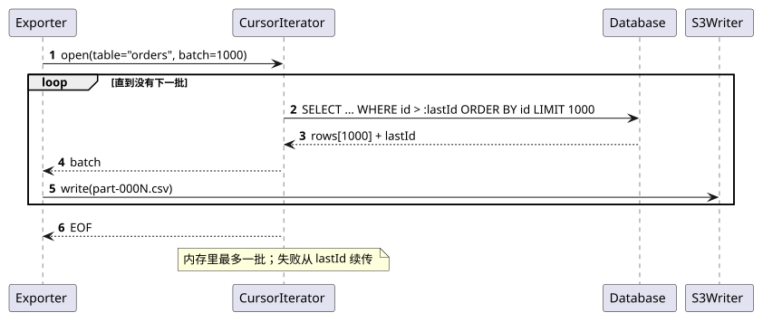

集合的存储方式会变：今天是数组，明天是链表。如果调用方直接写下标 a[i]，换存储就要改遍所有遍历。迭代器把“怎么走”封装起来：调用方只要 next()，拿到下一个元素或结束。
坏写法是暴露下标：
for (int i = 0; i < n; i++)
sum += data[i];换成链表后 data[i] 不成立，所有循环都要重写；如果集合内部有“跳过无效项”的规则，也会散落到每个调用方。
迭代器只暴露 next()：内部记住走到哪，调用方写 while ((p = next(&it)))。存储换了，迭代器实现换，调用方不动。
左边是调用方，中间是迭代器游标，右边是集合。
C 版迭代器是一个带下标的游标结构；C++ 版实现 begin/end，直接支持 range-for。
/* 迭代器 · 遍历数组集合
* gcc -std=c11 -Wall -Wextra iterator.c -o iterator
*/
#include <stdio.h>
typedef struct {
const int *data;
int n;
int i;
} iter_t;
static void iter_init(iter_t *it, const int *data, int n)
{
it->data = data; it->n = n; it->i = 0;
}
static const int *iter_next(iter_t *it)
{
if (it->i >= it->n) return NULL;
return &it->data[it->i++];
}
int main(void)
{
int nums[] = { 10, 20, 30, 40, 50 };
iter_t it;
iter_init(&it, nums, 5);
const int *p;
int sum = 0;
while ((p = iter_next(&it)) != NULL) {
printf(" 取到 %d\n", *p);
sum += *p;
}
printf("总和 = %d\n", sum);
printf("调用方没有用到下标，换链表也不用改这里\n");
return 0;
}取到 10 取到 20 取到 30 取到 40 取到 50 总和 = 150 调用方没有用到下标，换链表也不用改这里
// 迭代器 · 遍历数组集合
// g++ -std=c++17 -Wall -Wextra iterator.cpp -o iterator_cpp
#include <cstdio>
#include <vector>
class Range {
public:
explicit Range(std::vector<int> v) : v_(std::move(v)) {}
class Iter {
public:
explicit Iter(const int* p) : p_(p) {}
bool operator!=(const Iter& o) const { return p_ != o.p_; }
void operator++() { ++p_; }
int operator*() const { return *p_; }
private:
const int* p_;
};
Iter begin() const { return Iter(v_.data()); }
Iter end() const { return Iter(v_.data() + v_.size()); }
private:
std::vector<int> v_;
};
int main()
{
Range r({ 10, 20, 30, 40, 50 });
int sum = 0;
for (int x : r) {
std::printf(" 取到 %d\n", x);
sum += x;
}
std::printf("总和 = %d\n", sum);
std::puts("range-for 背后就是 begin/end 迭代器");
return 0;
}取到 10 取到 20 取到 30 取到 40 取到 50 总和 = 150 range-for 背后就是 begin/end 迭代器
| 角色 | C 版 | C++ 版 | 差别意味着什么 |
|---|---|---|---|
| 迭代器形态 | 游标结构 + next | begin()/end() + operator++ | C 手动，C++ 可 range-for |
| 结束条件 | 返回 NULL | it != end() | 都不能越界读 |
| 存储耦合 | 迭代器知道数组 | 迭代器持有容器引用 | 调用方都不知道 |
| 跳过无效项 | 在 next 里过滤 | 在 operator++ 里过滤 | 规则收敛一处 |
参考教程：refactoringguru.cn
生产实例：千万行数据导出（游标分页）
导出报表不能一次性 SELECT 全表，也不能用 OFFSET 翻页：越往后越慢，还会重复/漏行。迭代器封装游标：每次取一批，记住最后一条主键，调用方只写 while (next())，内存里最多一批。

@startuml
autonumber
participant "Exporter" as E
participant "CursorIterator" as I
participant "Database" as D
participant "S3Writer" as W
E -> I: open(table="orders", batch=1000)
loop 直到没有下一批
I -> D: SELECT ... WHERE id > :lastId ORDER BY id LIMIT 1000
D --> I: rows[1000] + lastId
I --> E: batch
E -> W: write(part-000N.csv)
end
I --> E: EOF
note over I: 内存里最多一批；失败从 lastId 续传
@enduml